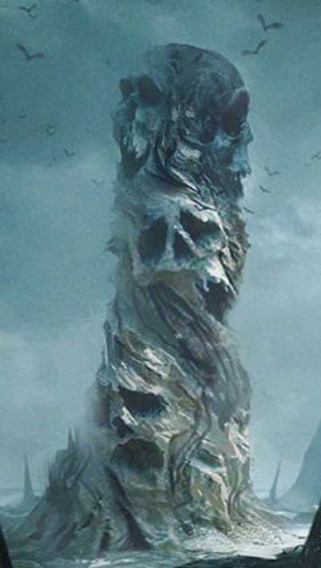

THE IMPERIAL TIMES
YEARLY FESTIVAL SLASH ORK HUNTING RITUAL SEES NEW RECORD-BREAKING TOWER CREATED BY THE "ABUNDANT NATURAL RESOURCES GIFTED TO US BY THE OMNISSIAH TO ENSURE OUR BLADES STAY SHARP"
From: wantheawoo
Breaking bones and new records, Magos Artisan Adraxi displays the winning pile of Ork Skulls for the yearly Ryzan Ork Hunt. Made up of 7,381 skulls fused into large blocks of bone while keeping a general skull motiff, the pillar has been judged to be both an artistic piece of work and a stable structure, breaking the previous record of 6,281 skulls set by Magos Metallurgicus Robert. Work on converting the Tower of Bones into a functional recycling bay for the Ork Corpses that still litter Ryza will begin at the end of the festival.

FANTASTIC FIGHTING ON FARUUN FRIGHTENS AND FLOUDERS FEEBLE FOES FAST.
From: altonascends
The world of Faruun was is recently being reclaimed from non-natural biome degradation by the many skilled and wise adepts of Ryza, Furnace of Shackled Stars. Once more the brilliant minds of the Adeptus Mechanicus have done what the vile and ignorant xenos never could and return this world to some form of life. So enraged to see humanity prospering where the vile xenos could not the perfidious t'au launched a feeble assault. Nearby, Imperial forces swarming to our allies defense allowed for the local Mechanicus forces to not even have to stop their important revitalization of the world. Soon the filthy T'au will not only be booted of off this planet but off of every other possible world they could ever hope to hold.
Signing off as your War Reporter Jimmy Falcon.
MORDAXIS HIVE LIBERATED!
From: altonascends
MORDAXIS HIVE — The bells are ringing in Mordaxis, folks — and for once, they’re not tolling for the dead. That’s right: seventeen solar weeks of fire, fury, and faith have paid off. The hive is back in Imperial hands!
The Angels in blue — Ultramarines if you're nasty — along with their slick-boot Auxilia, the trench-tough Cadians, our sharp-dressed Tempestus Scions, and the bronze-armored heartthrobs of the Astartes —the Bronze Knights—marched in and made good on the Emperor’s promise: no quarter for xenos scum.
But don’t pop your ration-champagne just yet. Because this party’s got a basement. And it stinks.
Word on the vox is there’s a rotten nest of Genestealer filth wriggling around in the belly of a derelict Space Hulk buried under the Hive. A real house of horrors: twisted tunnels, bio-freak murals, and hybrids playing dress-up in the faces of your neighbors. It’s not just heresy, folks—it’s family betrayal with tentacles.
Up top, the cleanup’s getting spicy. The Ecclesiarchy and the big-letter boys from the Inquisition are turning over every bolt-hole and sump drain. Whole hab-blocks are getting a holy barbecue, and anyone with a suspicious sneeze is getting a gene-scan faster than you can say “Ave Imperator.”
Meanwhile, the brave drop teams are spelunking into the black gut of that Hulk. No vox. No light. Just bolters, prayers, and bad odds.
Stay tuned, citizens. Sleep with your lasgun. And if your brother starts speaking in riddles — Report. Cleanse. Repeat.
Remember: The Emperor protects — but only if you do your part.